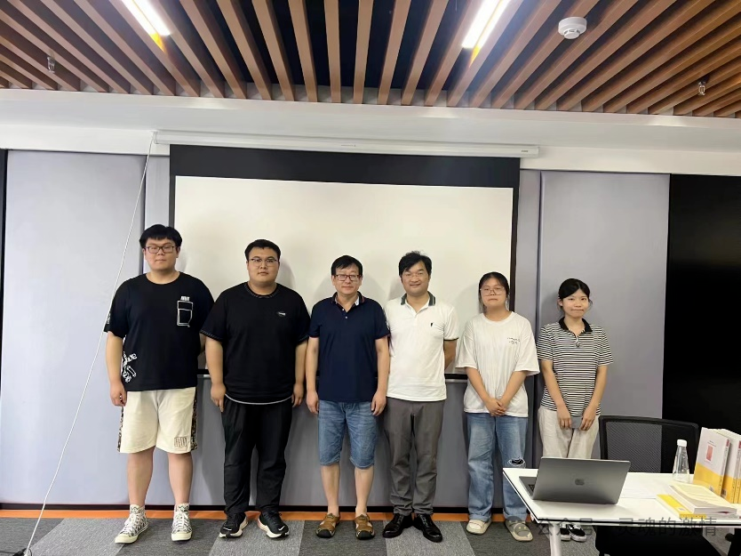

活动概述
2024 年 7 月 13 日下午 3 点，现代思想史研究中心举行第一期讲座，主题为“柏格森哲学及其对法国哲学和中国哲学的影响”。主讲人为上海交通大学哲学系副教授邓刚，主持人为英国约克大学哲学博士生滕光伟。活动采取线上线下同时进行的方式，除专业研究者外，也向社会公众开放。
根据纪要，主持人在开场时介绍了中心“从纯粹学术走向生活世界”的设想，强调要把经典研究与现代性问题重新连接起来。这一背景也构成了本场讲座的基本定位：不是孤立介绍柏格森，而是借由柏格森重新回到时间、生命、自由与精神危机这些现代思想的核心议题。
生成的哲学与柏格森的问题意识
纪要中首先突出了邓刚老师对柏格森哲学风格的判断。与那种自上而下、结构严整的“建构的哲学”不同，柏格森的写作更像是一种“生成的哲学”：他从最初的哲学直观出发，不断扩展思路，将意识、物质、生命、宇宙、伦理与宗教逐步联结起来。
这一判断也解释了柏格森四部代表作之间的内在线索，即从《论意识的直接材料》到《物质与记忆》，再到《创造进化论》和《道德与宗教的两个来源》，始终围绕“生命如何不断生成自身”这一问题展开。
数量与性质、“绵延”的时间
在纪要所整理的讲座内容中，邓刚老师以意识、时间与自由三个角度切入伯格森。《论意识的直接材料》部分首先区分了“数量”与“性质”：科学与心理学常试图用可测量的方式描述人的心理状态，但柏格森坚持认为，意识状态并不能完全化约为数量，它具有不可量化的质。
由此，讲座进入柏格森最重要的时间概念“绵延”。纪要将三种时间观作了清晰对比：古典哲学所理解的永恒与现世之分、现代科学可计算的同质化时间，以及柏格森从生命与意识内部把握的“真正时间”。在这个意义上，时间不是被切割出来的刻度，而是多种状态相互渗透、持续流动的生命经验。
自我、自由与生命冲力
纪要中特别保留了柏格森关于“表层自我”与“深层自我”的解释。讲座指出，真正的自由并不只是从既有选项中作出选择，而是从深层自我出发，创造新的可能性。自由因此不再是空间化思维中的“可能项排列”，而是生命内部不断生成的行动能力。
在生命问题上，讲座又进一步讨论了“生命冲力”概念，以及柏格森如何从意识扩展到生理生命、再扩展到宇宙中的普遍生命过程。纪要将这一部分理解为对现代精神危机的一种反拨：柏格森不满足于机械论式的世界图景，而试图重新为生命、道德和宗教保留创造性的维度。
对法国哲学与中国哲学的影响
在影响问题上，邓刚老师从两个方向展开。其一是法国现代思想内部的延续关系：纪要提到柏格森对海德格尔时间观、萨特本体论、康吉莱姆生命哲学、西蒙东技术论以及德勒兹生成哲学的启发意义。其二是中国接受史：自 1913 年起，柏格森便进入中文思想界，其直观方法和生命观曾被张君劢、熊十力、冯友兰、方东美等人积极吸收。
纪要最后还特别指出，柏格森的生命哲学与中国思想传统在“生机论”与“精神性提升”问题上存在明显亲和性。这一层面使得本场讲座不仅属于法国哲学史，也自然延伸到中西思想对话的语境中。
评议与讨论
评议环节围绕三个问题展开：斯宾诺莎与柏格森关于一与多的差异、技术时代中精神性提升的可能性，以及柏格森与现象学之间的关联。纪要显示，邓刚老师在回应中进一步借康吉莱姆、舍勒与海德格尔等思想家，说明了柏格森哲学如何进入更广泛的现代思想脉络。
当天下午 5 点 40 分，讲座结束。这一结束时间也表明现场讨论并未停留在一般性介绍，而是把讲座真正推进到了思想比较与问题追问的层面。
活动照片
以下图片先参考纪要 PDF 中的现场照片设置，后续可直接替换为你上传的原始活动照片。
